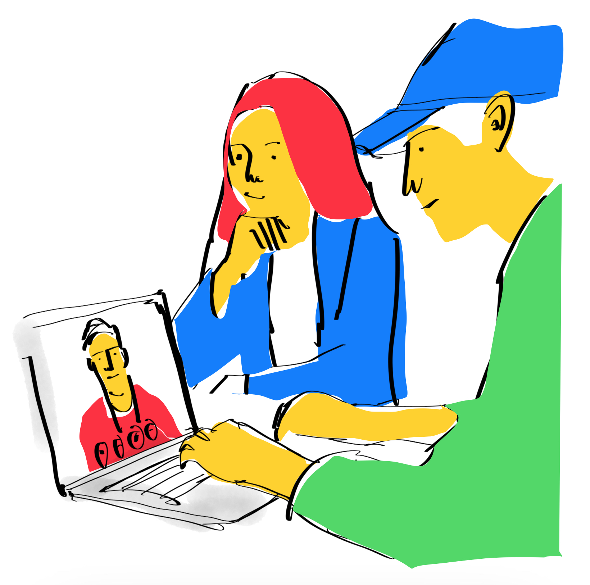

I help organisations find the right problems to solve and support teams to solve them in the right way.
I am user centered design lead based in Leeds, UK with over 20 years experience in; service design, interaction design, UX design, product design, graphic design, design research and strategy.
I'm currently working at Justice Digital as a senior service designer, aligning complex policy with digital delivery.

Career highlights
Redesign of the NHS website (nhs.uk), supporting over 60 million users monthly.
Driving accessibility and usability improvements for 200+ financial forms.
On a team that created the NHS digital design system (Standards Manual).
Establishing a measurement framework to align performance with strategic goals.
Case Studies
→ 🄲🅞🅼🄘ⓝ⒢ soon